Homeostasia ácido-base. O organismo mantém o pH ~7,40
defendendo a razão HCO₃⁻/PaCO₂. As Fig. 1–13 voltam no Caso, na Trilha e na Avaliação. Atribuição em
CREDITS.md (em curadoria).
CO₂ + H₂O ⇌ H⁺ + HCO₃⁻. O pulmão move o PaCO₂ em minutos; o rim, o HCO₃⁻ em dias. O pH é a razão entre eles.
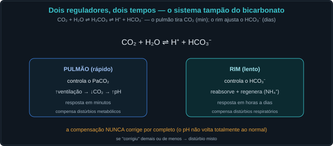
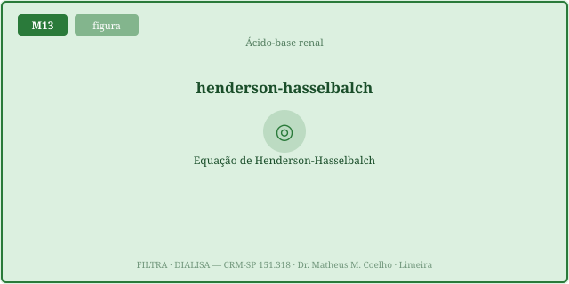
Reabsorver o HCO₃⁻ filtrado não cria base; regenerar (excretando H⁺ tamponado) repõe o que os ácidos consumiram. O NH₄⁺ é o tampão que o rim ajusta.
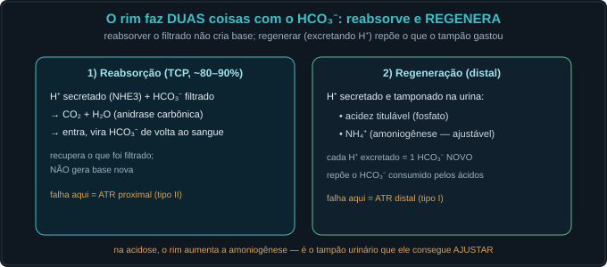
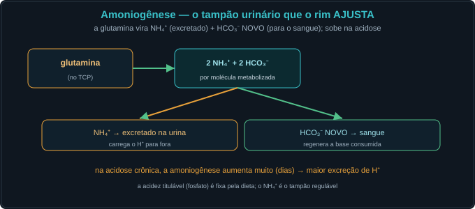
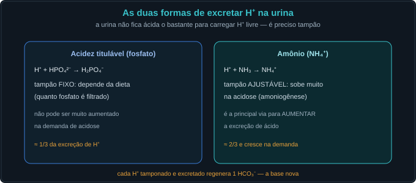
AG = Na⁺ − (Cl⁻ + HCO₃⁻) ≈ 12. Sobe quando um ácido fixo deixa seu ânion; a albumina baixa o mascara (corrigir).
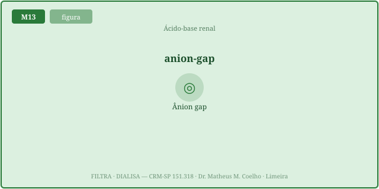
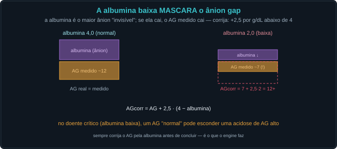
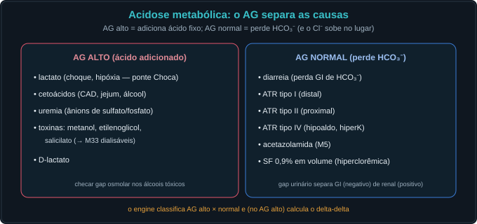
A compensação tem valor esperado; desvios revelam um segundo distúrbio.
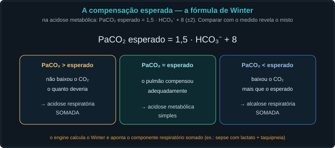
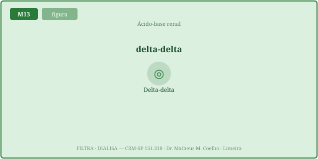
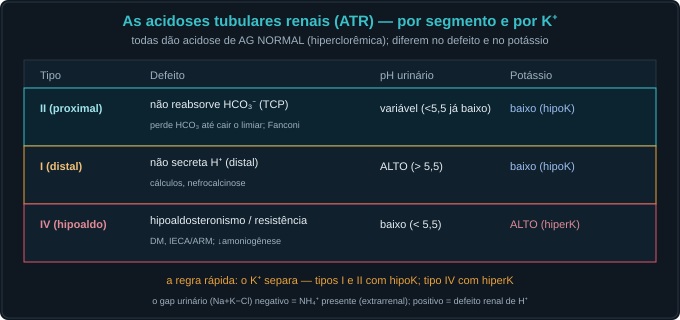
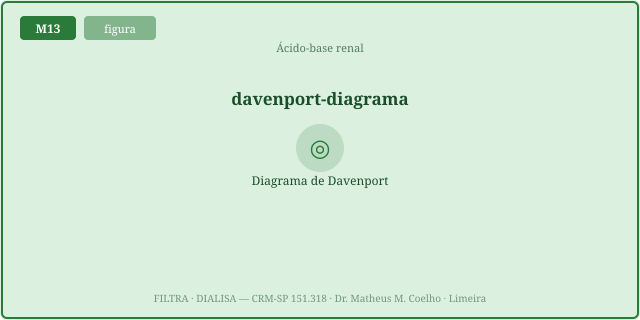
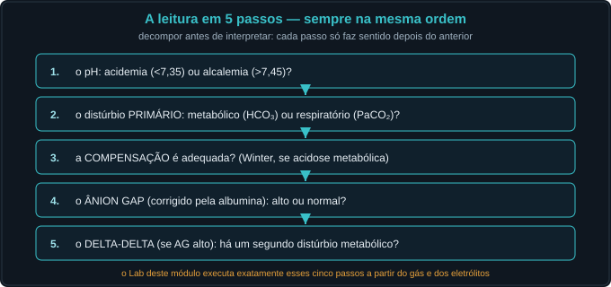
Mulher séptica, taquipneica. Gasometria: pH 7,30 · PaCO₂ 24 · HCO₃ 11 · Na 138 · Cl 100 · albumina 2,5. Vamos decompor.
O pulmão regula o PaCO₂ (rápido); o rim regula o HCO₃⁻ (lento). O pH é a razão entre eles.
pH = 6,1 + log(HCO₃/(0,03·PaCO₂)). O pH depende da RAZÃO, não dos valores isolados.
Não — só recupera o filtrado. Gerar base nova exige REGENERAR, excretando H⁺ tamponado.
Acidez titulável (fosfato, fixa) e NH₄⁺ (amoniogênese, ajustável). Cada H⁺ excretado = 1 HCO₃⁻ novo.
O NH₄⁺: a amoniogênese sobe muito na acidose crônica (glutamina → NH₄⁺ + HCO₃⁻ novo).
AG = Na⁺ − (Cl⁻ + HCO₃⁻) ≈ 12. Mede os ânions não medidos.
A albumina é o maior ânion invisível; se cai, o AG cai. AGcorr = AG + 2,5·(4 − albumina).
AG alto = ácido fixo adicionado (lactato, cetona…). AG normal = perda de HCO₃⁻ com Cl⁻ subindo (diarreia, ATR).
Dá o PaCO₂ esperado na acidose metabólica (1,5·HCO₃ + 8 ± 2); desvios revelam componente respiratório somado.
Distúrbio metabólico misto: <1 = AG normal somada; 1–2 = HAGMA pura; >2 = alcalose metabólica somada.
Todas dão acidose de AG NORMAL (hiperclorêmica). Diferem no defeito e no potássio.
Tipos I (distal) e II (proximal): hipoK. Tipo IV (hipoaldo): hiperK.
pH → primário → compensação (Winter) → ânion gap (corrigido) → delta-delta. Decompor antes de interpretar.
Os controles do Lab definem o gás e os eletrólitos; aqui o ponto (pH, HCO₃) se move sobre as isóbaras de PCO₂. A caixa verde é a zona normal.
| Variável | Atual | Comentário |
|---|---|---|
| pH | — | 7,35–7,45 |
| Ânion gap | — | ~12 |
| AG corrigido (albumina) | — | +2,5/g abaixo de 4 |
| PaCO₂ esperado (Winter) | — | se ac. metabólica |
| Delta-delta | — | se AG alto |
| Diagnóstico | — | 5 passos |